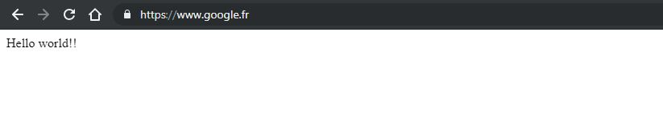
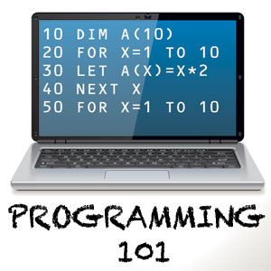

Dynamique des sites
A la découverte de JavaScript
Créée par Alexandre LAMOOT & Youri ESCHENBRUMER via l'API de présentation Reveal.js
Qui sommes nous?

Alexandre LAMOOT
- Master Ingénierie de Projet Informatique Innovation
- Ingénieur d'études chez Proxiad depuis 2017
- Ingénieur d'études et développement Customer Engagement chez Adeo
- Passionné des nouvelles technologies
- Contact a.lamoot@proxiad.com / 06.58.53.04.66
Youri ESCHENBRUMER
- ISEN Brest, Diplôme d'ingénieur, Génie logiciel
- Ingénieur d'études chez Proxiad depuis 2017
- Ingénieur d'études et développement Customer Engagement chez Adeo
- Passionné des nouvelles technologies
- Contact y.eschenbrumer@proxiad.com
Comment estimez vous votre niveau en JavaScript?
But du cours

- A quoi sert le JavaScript?
- Les bases fondamentales de JavaScript
- Utilisation de la librairie JQuery
- Dynamiser son site internet avec Ajax
Nous comptons sur
- Votre assiduité
- Porte fermée 15 minutes après le début du cours
- Votre attention
- Utile pour la partie pratique du cours et les rendus
- Votre participation
- N’hésitez pas à poser des questions
Plan
- Quizz sur JavaScript
- Historique de JavaScript
- Les bases de JavaScript
- Les variables
- Les tableaux
- Les boucles
- Les opérateurs
- Les conditions
- Les fonctions
Plan
- Ajax
- Ajax, qu'est ce que c'est ?
- Créer sa première page
- Rendre son site Ajax compatible avec tous les navigateurs
- Les langages serveurs
- JQuery
- Introduction
- Créer une première page avec JQuery
- Donner vie à son site (animations)
Place au Quizz
Historique de JavaScript
- JavaScript, et surtout l'utilisation qu'en font les responsables de sites web, a beaucoup évolué depuis sa sortie.
Il y a quelques années encore,ce langage était utilisé essentiellement pour des annimations, lourdes et le plus souvent inutile. - Cette mauvaise réputation est aussi le résultat de son historique. En effet, ce langage a été enrichi progressivement au fur et mesure des besoins
Historique de JavaScript
- La guerre entre les différentes sociétés éditrices de navigateurs web a largement contribué à créer des incohérences et les problèmes de compatibilité que connaît JavaScript.
- De nombreux développeurs considèrent JavaScript comme un sous-langage, ne méritant même pas qu'on s'y intéresse.
Historique de JavaScript
- Les efforts de standardisation et de compatibilité entre les navigateurs ont efficacement simplifié le travail des développeurs, rendant le langage plus accessible.
- Même si les tests visant à s'assurer de la compatibilité entre les différents navigateurs et système d'exploitation représentent toujours une lourde tâche, de vrais progrès ont été réalisés.
Historique de JavaScript
- La compatibilité entre les navigateurs s'est nettement améliorée depuis quelques annnées. Au début des années 2000, les deux principaux navigateurs, Intenet explorer 4 et 5 & Netscape v4, étaient totalement différents au niveau de leur interprétation JS.
- JavaScript est un langage de script.Il est interprété, c'est-à-dire que le script est lu, analysé et éxécuté directement depuis le code source sous sa forme textuelle par le navigateur, sans aucune transformation.
Les limites de JavaScript
- Il ne peut pas accéder par lui-même aux informations du serveur.
- Il ne peut pas, non plus, lire ou écrire dans la base de données.
- Seul, il ne permet pas de créer des sites dits "Dynamique". Un lanage serveur est obligatoire pour qu'il soit possible de fournir ces fonctionnalités dynamiques.
Les limites de JavaScript
- Des limites importantes au niveau du poste client sont imposées par les navigateurs dans leur interprétation de JavaScript pour des raisons de sécurité de l'utilisateur.
- La sécurité des navigateurs vise à protéger:
- La confidentialité des données du poste du visiteur
- L'intégralité des données des autres sites consulutés.
- Le système d'exploitation
Les outils
- Sublime Text / Notepad ++
- Visual studio code
- PhpStorm
Les bonnes pratiques
Les bonnes pratiques
- L'indentation du code
- Les commentaires
- Commentaire sur une ligne
// Compteur vaut 1 - Commentaire sur plusieurs lignes
/* Première version de mon script */ - Commentaire depuis une position jusqu'à la fin de la ligne
if(compteur == 1){ // Compteur vaut 1
- Commentaire sur une ligne
- Les règles de nommage
Les bonnes pratiques
- Le nommage des fonctions
- is retourne un résultat vrai ou faux
- get retourne un résultat calculé
- set affecte une donnée.
- add ajoute un élément
- del supprime un élément
Les bonnes pratiques
- Le nommage des variables
- dt date
- prix montant ou prix
- nb nombre entier
- txt chaîne de caractères
- flag indicateur de valeur "vrai" ou "faux"
La structure d'un script
- JavaScript est directement intégré au code HTML de la page. Le navigateur reconnaît les zones de script grâce aux balises "script" qui identifient un bloc de script
Votre premier script

Les Bases de JavaScript
Les variables
Déclaration et initialisation des variables
Déclaration sans initialisation des variables
Remarque : Il est possible de déclarer plusieurs variables avec une seule instruction
Les variables indéfinies
Le fait de déclarer une variable sans lui affecter de valeur initiale rend la variable indéfinie. Elle contient la valeur undefined. Aucune manipulation n'est possible avec ce genre de variable.
Une variable utilisée sans avoir été déclarée n'a pas ce statut de variable indéfinie. Pour le navigateur, une variable utilisée et non déclarée est inconnue et déclenche une erreur JavaScript. Il ne faut pas confondre variable indéfinie et variable inconnue car non déclarée.
le type number
Le type number concerne toutes les variables contenant un nombre, entier, à virgule, positif, ou négatif, très grand ou très petit. Il n'y a pas de notion de taille dans les variables JavaScript. Toute variable contenant une valeur numérique possède le type number.
Les variables de ce type peuvent être manipulées avec les nombreuses opérations mathématiques disponibles en JavaScript.
Le type string
Le type string concerne toutes les variables contenant une chaîne de caractères. Une chaine de caractères est délimitée par les guillemets et peut contenir tous les autres caractères disponibles. Encore une fois, JavaScript ne se préoccupe pas de la taille de la chaîne. Le type string est identique, que la chaîne comporte un seul caractère ou plusieurs milliers.
Le type boolean
Le type boolean (booléen) peut contenir deux valeurs : "vrai" ou "faux", soit true ou false. Le type booléen est issu de l'algèbre de Bool, mathématicien anglais du XIX e siècle qui a écrit les règles de manipulation des valeurs "vrai" et "faux". Ce type de données est très utilisé dans tous les langages, car il est à la base des tests conditionnels.
Les Bases de JavaScript
Les objets
Constructeur avec trois propriété et une méthode
Les Bases de JavaScript
Les tableaux
Déclaration de tableau
Les méthodes sur les tableaux
- concat() regroupe deux tableaux ensemble et retourne le résultat de la concaténation sous forme d'un troisième tableau.
- join() regroupe tous les éléments d'un tableau sous forme d'une chaîne de caractères.
- pop() supprime le dernier élément d'un tableau.
- push() ajoute des éléments en fin de tableau.
- reverse() inverse l'ordre des éléments du tableau.
- shift() supprime le premier élement du tableau.
- slice() extrait une tranche d'un tableau.
Les méthodes sur les tableaux
- sort() trie les élements d'un tableau dans l'ordre croissant ou alphabétique.
- splice() écrase une tranche d'un tableau.
- unshit() insère des élements en début de tableau.
Les Bases de JavaScript
Les tests conditionnels
Le test simple
Le test "si, sinon"
Les tests multiples